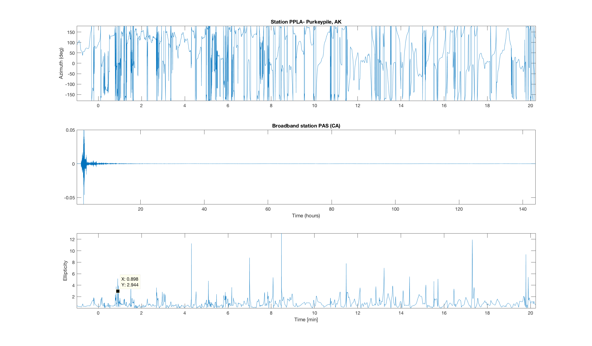

Homework 2:
Normal mode observations, Polarization analysis and component rotation Rebekah Lee Due 2/13/17
Contents
Part 1 Normal Mode Observations
% *1.1 Plot the raw time series; use dimension hours on the time axis* % Load the data load('sumatra.txt') % create the time vector n = length(sumatra); dt = 10; %seconds t = 1:dt:n*10; % time in seconds t = t./3600; %time in hours % plot the raw data figure(1); plot(t,sumatra) title('Broadband station PAS (CA)') xlabel('Time (hours)') axis tight
1.2. Fourier transform the time series and plot amplitude and unwrapped phase spectra; use dimension mHz on the frequency axis
fs = .1; %Hz fs = fs*1000; % sampling frequency in mHz nyq = fs/2; % [mHz] % frequency vector freq = linspace(0,nyq,n/2+1); % [mHz] freq2 = freq*1000; %micro hertz % fft Y = fft(sumatra); Amp = abs(Y); Amp = Amp(1:n/2+1); phase = angle(Y); phase = unwrap(phase(1:n/2+1));
Warning: Integer operands are required for colon operator when used as index Warning: Integer operands are required for colon operator when used as index
Plot Amplitude Spectrum and Phase
figure(2) subplot(2,1,1) plot(freq,Amp) xlabel('Frequency mHz') title('Amplitude Spectrum') ylabel('Amplitude') axis tight subplot(2,1,2) plot(freq,phase) xlabel('Frequency mHz') ylabel('Radians') title('Unwrapped Phase')

1.3 The nyquist frequency is .05 Hz or 50 mHz
1.4 Identify Normal Modes
% mode locations mloc = [646.2,814,841,945.2,1038,1107,1231,1381,1414,1576,1723,1798,1865,... 1991,2052,2112,2232,2348,2407,2459,2569,2676,2780,2878,2978,3075,3171,... 3216,3270,3356,3453,3544,3725,3814,3904,3966,4082,4169,4350,4435,4525,... 4799,5068,5091,5147,5201,5247,5359,5505,5583,5872,5992,6221,6225,6327,... 6593,6640,6698,6780,6865,7151,7232,7427,7465,7633,7699,7807,7888,8250,... 8343,8407,8439,8544,8806,9008,9095,9201,9304,9363,9583,9770,9813,9909]; %in microhertz mloc = mloc./1000; % in mHz % Find index number for frequencies located during manual inspection nmodes= length(mloc); idx= zeros(nmodes,1); for imode =1: nmodes [~,idx(imode)] = min(abs(freq-mloc(imode))); end % mode labels mlabels= {'_0S_4','_0S_0','_0S_5','_3S_1','_0S_6','_3S_2','_0S_7','_2S_4'... ,'_0S_8','_0S_9','_0S_{10}','_1S_8','_2S_7','_0S_{12}','_2S_8',... '_0S_{13}','_0S_{14}','_1S_{11}','_2S_{10}','_0S_{16}','_0S_{17}',... '_0S_{18}','_0S_{19}','_0S_{20}','_0S_{21}','_0S_{22}','_0S_{23}',... '_8S_{2}','_3S_0','_0S_{25}','_0S_{26}','_0S_{27}','_0S_{29}','_0S_{30}',... '_0S_{31}','_3S_{16}','_0S_{33}','_0S_{34}','_0S_{36}','_4S_{14}',... '_1S_{24}','_0S_{41}','_0S_{44}','_3S_{23}','_{9}S_{8}','_{4}S_{19}',... '_{0}S_{46}','_{4}S_{20}','_{8}S_{10}','_{2}S_{26}','_{8}S_{12}','_{5}S_{19}'... ,'_{16}S_{3}','_{2}S_{30}','_{7}S_{16}','_{15}S_{6}','_{5}S_{23}',... '_{2}S_{33}','_{0}S_{63}','_{12}S_{10}','_{16}S_{6}','_{6}S_{23}',... '_{8}S_{10}','_{17}S_{5}','_{17}S_{7}','_{9}S_{19}','_{14}S_{11}','_{15}S_{10}'... ,'_{5}S_{33}','_{7}S_{27}','_{12}S_{15}','_{8}S_{24}','_{7}S_{28}',... '_{2}S_{47}','_{22}S_{5}','_{7}S_{31}','_{5}S_{39}','_{0}S_{90}','_{1}S_{62}'... ,'_{0}S_{93}','_{0}S_{95}','_{11}S_{25}','_{26}S_{4}'};
Plot Normal Modes
figure(3); % plot fft subplot(3,1,1) plot(freq,Amp) xlabel('Frequency mHz') title('Amplitude Spectrum') ylabel('Amplitude') axis tight % Identify Modes subplot(3,1,2) plot(freq,Amp) hold on plot(freq(idx(1:42)),Amp(idx(1:42)),'.r') xlim([0,5]) text(freq(idx(1:42)-24),Amp(idx(1:42))+.1,mlabels(1:42),'fontweight','bold','EdgeColor','black','BackgroundColor',[.94 .94 .94],'fontsize',7,'FontName','Arial') xlabel('Frequency mHz') ylabel('Amplitude') subplot(3,1,3) plot(freq,Amp) hold on plot(freq(idx(42:end)),Amp(idx(42:end)),'.r') xlim([5,10]) text(freq(idx(43:end)-24),Amp(idx(43:end))+.1,mlabels(43:end),'fontweight','bold','EdgeColor','black','BackgroundColor',[.94 .94 .94],'fontsize',7,'FontName','Arial') xlabel('Frequency mHz') ylabel('Amplitude') set(gcf,'Position',[190 50 1141 740]);

1.5 Discrepancies between table by Masters and Ridmer
% Some of the peaks in the Sumatra data were not included in the table from % Masters and Ridmer while others were missing. The table in Masters and % RIdmer is a result of several methods to determine degenerate frequency % including correcting the signal from 3-dimensional structure. This could % account for some of the frequencies being off by a few hertz from what % was in the table. Also the amplitude of each peak depends on the source % and whether that source excited a mode or not. Some of the missing modes % may be due to the modes not being excited. Additionally, for low % frequencies many of the fundamental modes were present with few of the % overtones. In the paper Masters and Ridmer explained that large % earthquakes excite longer wavelengths and that unless the earthquake is % very deep the fundamental modes dominate the spectra. The higher % frequency modes show more of the overtones. Since higher frequencies % correspond to smaller depths it makes sense that there would be more % overtones because they are not overshadowed by the shorter frequency % fundamental modes.
1.6 Highest frequency normal mode
% The highest frequency normal mode I found was _26S_4 at about 9.9 mHz. % Attenuation affects limit the maximum normal mode frequencies we can % observe. At great distances (like the california station) higher % frequencies attenuate. This is the alpha_k term in Master and Ridmer % which is the decay rate of the kth mode.
Part 2
*2.1 Download Data from IRIS. *
ds = datasource('irisdmcws'); % POKR ------------------------------------------ startTime = '2017/01/31 09:37:37'; endTime = '2017/01/31 09:59:40'; % E component ctags = scnlobject('POKR', 'BHE', 'TA', '--'); POKR_E = waveform(ds, ctags, startTime, endTime); % N component ctags = scnlobject('POKR', 'BHN', 'TA', '--'); POKR_N = waveform(ds, ctags, startTime, endTime); % vertical component ctags = scnlobject('POKR', 'BHZ', 'TA', '--'); POKR_Z = waveform(ds, ctags, startTime, endTime); %Purkeypile,AK ----------------------------------- startTime = '2017/01/31 09:37:37'; endTime = '2017/01/31 09:58:51.000'; % East ctags = scnlobject('PPLA', 'BHE', 'AK', '--'); PPLA_E = waveform(ds, ctags, startTime, endTime); % North ctags = scnlobject('PPLA', 'BHN', 'AK', '--'); PPLA_N = waveform(ds, ctags, startTime, endTime); % vertical ctags = scnlobject('PPLA', 'BHZ', 'AK', '--'); PPLA_Z = waveform(ds, ctags, startTime, endTime);
Requesting Data from the DMC... Requesting Data from the DMC... Requesting Data from the DMC... Requesting Data from the DMC... Requesting Data from the DMC... Requesting Data from the DMC...
plot the data
% POKR h=plot(POKR_E, 'xunit', 'm'); axis tight h2= plot(POKR_N, 'xunit', 'm'); axis tight h3=plot(POKR_Z, 'xunit', 'm'); axis tight % PPLA Purkeypile, AK plot(PPLA_E,'xunit','m'); axis tight plot(PPLA_N,'xunit','m') axis tight plot(PPLA_Z,'xunit','m'); axis tight


Part 2.2 Polarization analysis
%find window------------------------ % Dominant frequency %plot_spectrum(POKR_Z) %plot_spectrum(PPLA_Z) %dominant frequency of synthetic time series in Hz f = .5; % [Hz] %time sample interval freq_PPLA = get(PPLA_E,'FREQ'); freq_POKR =get(POKR_E,'FREQ'); dtPPLA = 1/freq_PPLA; % [s] dtPOKR = 1/freq_POKR; %Determine window to calculate polarization over, in samples cycs = 2; % number of cycles (2 to 3 is usually sufficient) wndoPPLA = floor( (1/f) * (1/dtPPLA) ) * cycs; % samples per cycle times # of cycles wndoPOKR = floor( (1/f) * (1/dtPOKR) ) * cycs; % samples per cycle times # of cycles %----------------------------------------- addpath ./Polarizemic/functions %PPLA dataE = get(PPLA_E,'DATA'); dataN = get(PPLA_N,'DATA'); dataZ = get(PPLA_Z,'DATA'); nPPLA =length(dataE); dtac = [dataZ';dataE';dataN']; [azim incd ellip] = polar_coherency(dtac,wndoPPLA); %POKR POKRdataE = get(POKR_E,'DATA'); POKRdataN = get(POKR_N,'DATA'); POKRdataZ = get(POKR_Z,'DATA'); nPOKR = length(POKRdataE); dtac = [POKRdataZ';POKRdataE';POKRdataN']; [azimPOKR incdPOKR ellipPOKR] = polar_coherency(dtac,wndoPOKR);
Plot Polarization Analysis
%set time for x axis tPPLA = 0:1/freq_PPLA:nPPLA/freq_PPLA-1/freq_PPLA; tPOKR = 0:1/freq_POKR:nPOKR/freq_POKR-1/freq_POKR; tPPLA = tPPLA./60-1; % time in minutes tPOKR = tPOKR./60-1; % Plot polarization analysis figure; subplot(3,1,1) plot(tPPLA,azim) title('Station PPLA- Purkeypile, AK') axis tight ylabel('Azimuth (deg)') subplot(3,1,2) plot(tPPLA,incd) axis tight ylabel('Incididence [deg]') subplot(3,1,3) plot(tPPLA,ellip) axis tight xlabel('Time [min]'); ylabel('Ellipticity'); set(gcf,'Position',[230 65 902 629]) figure; subplot(3,1,1) plot(tPOKR,azimPOKR) title('Station POKR- Poker Flatt, AK') axis tight ylabel('Azimuth (deg)') subplot(3,1,2) plot(tPOKR,incdPOKR) axis tight ylabel('Incidence [deg]') subplot(3,1,3) plot(tPOKR,ellipPOKR) axis tight xlabel('Time [min]'); ylabel('Ellipticity'); set(gcf,'Position',[230 65 902 629])


2.3 Observations on polarization analysis
% The p wave arrival for station PPLA is 8 seconds. At this time the % azimuth is -164 degrees compared to -107.58 degrees listed on the IRIS % sight. This could be due to using unrotated data. The azimuth and % incidence angle both jump around quite a lot. The Incidence angle is a % little better aas there soes seem to be an average of about 83.5 degrees.
Part 3
*3.1 Comparison of Azimuth
% The p wave arrival for station PPLA is 8 seconds. At this time the % azimuth is -164 degrees compared to -107.58 degrees listed on the IRIS % sight. % The azzimuth for stationi POKR ranges between about 28 and 47 degrees % near the time of the p wave arrival. IRIS gives the azimuth for POKR as % 35.41 % Each of these is not terrible, prehaps the difference comes from using % unrotated data.
*3.2 Compute the back azimuth
srclat = 63.0817; srclon = -150.9427; latPOKR = 65.12; lonPOKR = -147.43; latPPLA = 62.9; lonPPLA = -152.19; backAZPOKR = azimuth(latPOKR,lonPOKR,srclat,srclon); % back azimuth AZPOKR = backAZPOKR-180 backAZPPLA = azimuth(latPPLA,lonPPLA,srclat,srclon); AZPPLA = backAZPPLA-180 % The azimuth from this computation is in better agreement with the IRIS % data than the polarization computation.
AZPOKR = 38.5606 AZPPLA = -108.3399
3.3 rotate data
thetaPOKR = 3*pi/2 - deg2rad(backAZPOKR); thetaPPLA = 3*pi/2 - deg2rad(backAZPPLA); % Radial component R_POKR = cos(thetaPOKR).*POKRdataE + sin(thetaPOKR).*POKRdataN; T_POKR = -sin(thetaPOKR).*POKRdataE + cos(thetaPOKR).*POKRdataN; % Transverse Component R_PPLA = cos(thetaPPLA).*dataE + sin(thetaPPLA).*dataN; T_PPLA = -sin(thetaPPLA).*dataE + cos(thetaPPLA).*dataN;
plot the rotated data and the EN data
%POKR figure; subplot(5,1,1) plot(tPOKR',POKRdataE) axis tight ylabel('m/s') title('POKR E component') xlim([0 5]) ylim([-39758 65454]) subplot(5,1,2) plot(tPOKR',POKRdataN) axis tight ylabel('m/s') title('N component') xlim([0 5]) ylim([-50000 65454]) subplot(5,1,3) plot(tPOKR',R_POKR) axis tight ylabel('m/s') title('Radial Component') xlim([0 5]) ylim([-50000 65454]) subplot(5,1,4) plot(tPOKR',T_POKR) axis tight ylabel('m/s') title('Transverse Component') xlim([0 5]) ylim([-50000 65454]) subplot(5,1,5) plot(tPOKR',POKRdataZ) axis tight ylabel('m/s') title('Z component') xlabel('Time after EQ (min)') xlim([0 5]) ylim([-50000 65454]) set(gcf,'Position',[168 48 1148 750]); %----------------------------------------------------- %PPLA figure; subplot(5,1,1) plot(tPPLA',dataE) axis tight ylabel('m/s') title('PPLA E component') xlim([0 2]) ylim([-520532 456801]) subplot(5,1,2) plot(tPPLA',dataN) axis tight ylabel('m/s') title('N component') xlim([0 2]) ylim([-520532 456801]) subplot(5,1,3) plot(tPPLA',R_PPLA) axis tight ylabel('m/s') title('Radial Component') xlim([0 2]) ylim([-520532 456801]) subplot(5,1,4) plot(tPPLA',T_PPLA) axis tight ylabel('m/s') title('Transverse Component') xlim([0 2]) ylim([-520532 456801]) subplot(5,1,5) plot(tPPLA',dataZ) axis tight ylabel('m/s') title('Z component') xlabel('Time after EQ (min)') xlim([0 2]) ylim([-520532 456801]) set(gcf,'Position',[168 48 1148 750]);


3.4 Polarization of rotated data
% PPLA dtac = [R_PPLA';T_PPLA';dataN']; [azim incd ellip] = polar_coherency(dtac,wndoPPLA); %POKR dtac = [R_POKR';T_POKR';POKRdataN']; [azimPOKR incdPOKR ellipPOKR] = polar_coherency(dtac,wndoPOKR);
Plot Polarization Analysis set time for x axis
tPPLA = 0:1/freq_PPLA:nPPLA/freq_PPLA-1/freq_PPLA; tPOKR = 0:1/freq_POKR:nPOKR/freq_POKR-1/freq_POKR; tPPLA = tPPLA./60-1; % time in minutes tPOKR = tPOKR./60-1; % Plot polarization analysis figure; subplot(3,1,1) plot(tPPLA,azim) title('Station PPLA- Purkeypile, AK') axis tight ylabel('Azimuth (deg)') subplot(3,1,2) plot(tPPLA,incd) axis tight ylabel('Incididence [deg]') subplot(3,1,3) plot(tPPLA,ellip) axis tight xlabel('Time [min]'); ylabel('Ellipticity'); set(gcf,'Position',[230 65 902 629]) figure; subplot(3,1,1) plot(tPOKR,azimPOKR) title('Station POKR- Poker Flatt, AK') axis tight ylabel('Azimuth (deg)') subplot(3,1,2) plot(tPOKR,incdPOKR) axis tight ylabel('Incidence [deg]') subplot(3,1,3) plot(tPOKR,ellipPOKR) axis tight xlabel('Time [min]'); ylabel('Ellipticity'); set(gcf,'Position',[230 65 902 629]) % The azimuth for both stations looks a lot more smooth. For POKR the % azimuth hovers from about 20 degrees to about 50, consistent with the % 35.41 azimuth given by Iris. The spikes in each figure also correspond % much better to each other. That is major peaks in the azimuth have a % corresponding peak in the incidence angle and ellipticity. Now that the % data is rotated this makes sense because we are looking at the data as it % is actually. I am not sure why there is % a change in sign for the azimuth of the PPLA station.